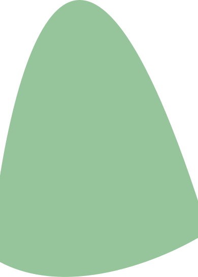
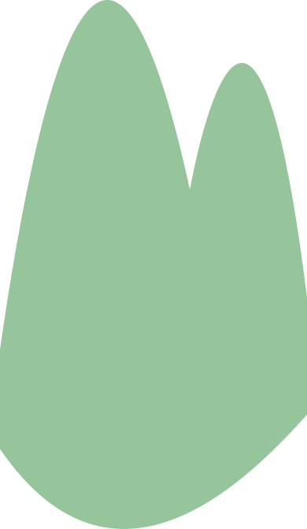

麓美和子
Fumoto Miwako
文章だけではなかなか
読んでもらえない内容でも、
デザインによって
分かりやすく整理されることで、
多くの人に伝わると感じています。
私自身も日常の中で、
情報が整理されたデザインに
何度も助けられてきました。
伝えたい想いや情報を、
誰かに届く形にすること。
それがデザインの大きな力だと
思っています。
だからこそ私は、
課題や想いの麓に立ち、
そこから山頂を目指すように、
相手と共に答えを形にしていく
デザイナーを目指しています。


私はこれまで、
デザインに興味を持ちながらも、
「学校では学んでいないから」
という理由で、
自分には難しいと
どこかで線を引いていました。
それでも諦めきれず、
現在の会社で自ら手を挙げ、
SNS運用を通してデザインに
関わる機会を得ました。
自分で調べ、
試行錯誤を繰り返す中で、
少しずつ形にできることが
増えてきました。
その過程で強く感じたのは、
「好きこそ物の上手なれ」
という言葉の通り、
好きだからこそ
向き合い続けることができる
ということです。
この経験を通して、
デザインは自分にとって、
「やってみたいこと」ではなく、
「これからも続けていきたいこと」
へと変わりました。
